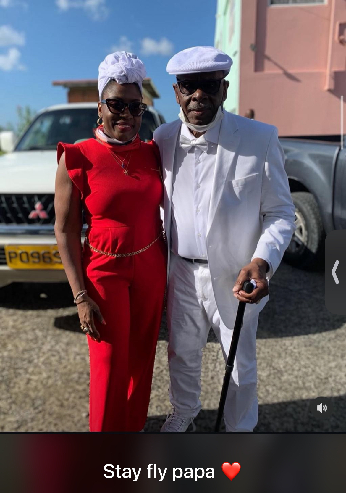

Rooted in care. Guided by hope.
Hope's Holistic Haven is a welcoming space designed to support wellness, connection, and healing with warmth, intention, and personalized care.

Support that feels personal, grounded, and hopeful.

At Hope's Holistic Haven, wellness is not one-size-fits-all. It is a lived experience shaped by compassion, self-awareness, and a deep respect for each person's unique path.
I created this space to support women and families seeking rest, clarity, and practical tools to feel more connected to themselves and the life they are building.
Through mindful guidance, therapeutic support, and holistic care, we can move toward alignment, resilience, and healing—without pressure or perfection.
Eileen Lang
Founder • Holistic Practitioner • Wellness Advocate
Full bio
Hi, I’m Eileen—founder of Hope’s Holistic Haven and a passionate advocate for mindful, meaningful wellness. My journey into holistic care began with a desire to create deeper support for people navigating stress, change, and life transitions.
I believe healing happens in a space that is calm, compassionate, and grounded in real life. My work centers on helping individuals reconnect with their inner wisdom, build resilience, and cultivate habits that support emotional and physical well-being.
Whether guiding someone through a personal season of growth or supporting a family in need of practical encouragement, I aim to bring warmth, clarity, and confidence into every interaction. At Hope’s Holistic Haven, you are welcomed exactly as you are.
My approach blends empathy, education, and gentle structure so that each person can move toward a life that feels more balanced, supported, and aligned with what matters most.
Thoughtful support for your healing journey.
We provide compassionate wellness experiences designed to help you slow down, reset, and reconnect with what brings you peace.
Services may include one-on-one support, tailored guidance, and intentional care plans for emotional balance, practical wellness habits, and everyday resilience.
• Wellness support
• Personalized guidance
• Emotional and spiritual support
• Gentle accountability and encouragement